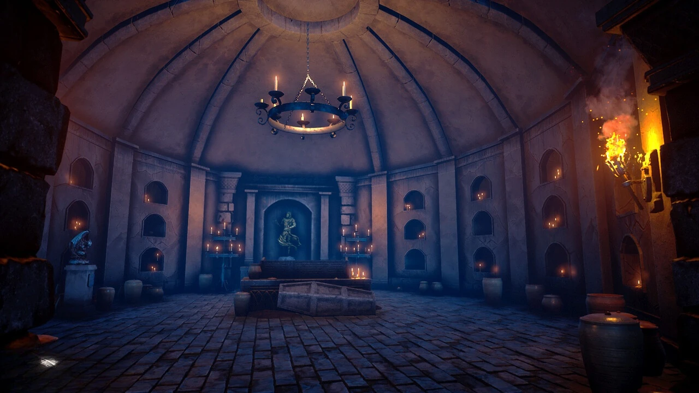

SINAMA — AI Agent Reliability Lab
My role: Product Designer & Full-Stack Developer
Multi-turn agent testing, deterministic workflow evidence, version-aware regression and release-readiness decisions.
Selected Work
The catalog is deliberately curated: flagship products first, capability-relevant supporting evidence second, and learning/archive work last.
Flagship
My role: Product Designer & Full-Stack Developer
Multi-turn agent testing, deterministic workflow evidence, version-aware regression and release-readiness decisions.

My role: Game Developer & Product Designer
Timed orders, factory restoration, multi-cell board logic, responsive layouts and platform-aware production architecture.
View Case StudySelected supporting evidence

My role: AI Designer
Enterprise conversational-AI evidence covering QA, stabilization, flow restructuring and multi-channel workflow logic.
View Details
My role: Co-Founder & Digital Product Developer
Customer-facing product ownership connecting service discovery, reservation journeys and operational automation.

My role: Software Developer
Database-backed patient, doctor, secretary and appointment workflows.

My role: AI Flow Designer & Frontend Developer
n8n-inspired browser experience for intent, response, fallback and validation thinking.

My role: Python / Database Developer
Patient, doctor and staff appointment workflows with MySQL-backed operations.
View Details
My role: Python Developer
Exploratory data analysis, visualization and a small price-estimation experiment.
View Details
My role: Game Developer
First-person environmental puzzle prototype with object manipulation and physics interactions.
View Details
My role: Android Developer
Android content-sharing project using Kotlin and Firebase.
View DetailsArchive policy
The GitHub profile remains the full archive. Labs contains smaller interactive experiments; this page stays focused on portfolio-grade evidence.